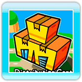
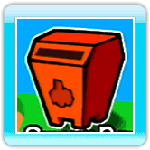

At the title screen, point at the screen and press  to continue to the Main Menu.
to continue to the Main Menu.
 ● Main Menu Screen
● Main Menu Screen
The Main Menu consists of three buildings. Point at a building, then press to select it.
 ·Wario-Man Super Store
·Wario-Man Super Store
Once you've selected the Wario-Man Super Store, select Games, Music, or Comics. You can select any of the games, records, or comics in these sections to enjoy.
·Distribution Center
There are three different ways of exchanging products in the Distribution Center. See details for each of these methods on P. 13-15.
*When visiting the Distribution Center for the first time, you can choose whether to set the D.I.Y. Friend Notification Switch to ON or OFF. For more on the D.I.Y. Friend Notification Switch, see P. 15.
*You will see a displayed when new products have arrived at the Distribution Center.
·Survey Box
When you send a D.I.Y. Friend a product via the Distribution Center and that friend fills out a survey about your product, the survey will arrive in your Survey Box. Select the survey you want to read from the list.
*You will see a displayed when new surveys have arrived in the Survey Box.